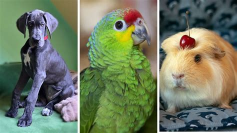
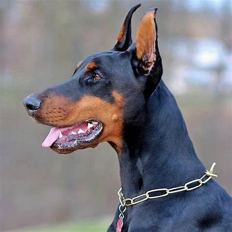

Mascotas
Los loros son una superfamilia del orden Psittaciformes, con un total de 369 especies. Los loros típicos son más numerosos y están más extendidos que las otras superfamilias de psitaciformes,
| Imagen | Raza | Tamaño |
|---|---|---|
|  | doberman | grande |
Gato, procedente del vocablo latino cattus, es un término que alude a un animal mamífero que forma parte del conjunto de los félidos: aquellas especies carnívoras que presentan patas posteriores con cuatro dedos y patas anteriores con cinco dedos; uñas retráctiles; hocico corto; y cabeza de forma redondeada.